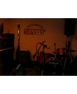

でもシークレットなので、最中の写真じゃなくて、終わった後の気だるい写真を載せます＾＾；
プレベ(じゃずべでもそうかもだけど)結構ひょんなときに、ピックアップに弦があたるのか、ブリっとした音が出ます。昔は、それが気になってしかたがなかったんだけど、どうも、いやそんなことないよ～という声もあり、とりあえず出ないようなセッティングにするのは今は止めてます。
他にもいろいろ微調整はし続けているのですが、やっぱりいろんな場所に持っていって確認しながらじゃないとまずいですね。
というわけでした。